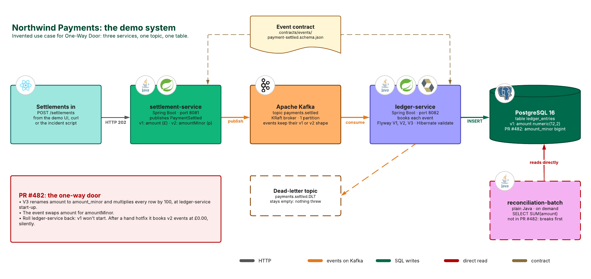
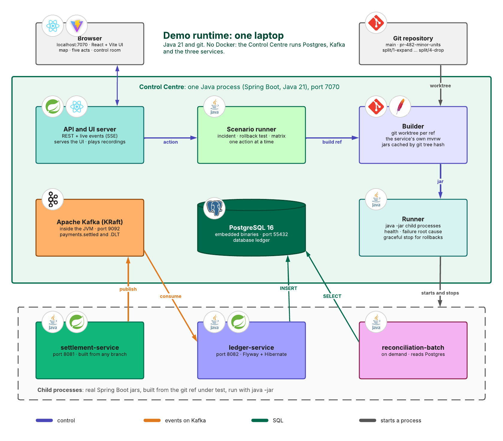
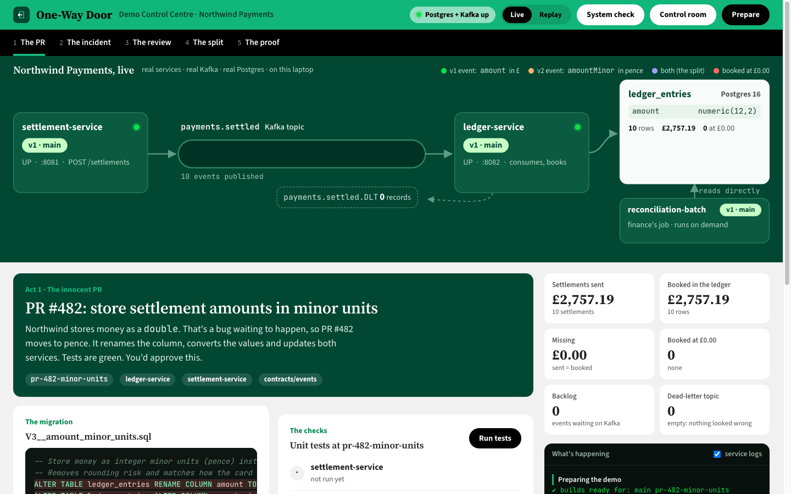
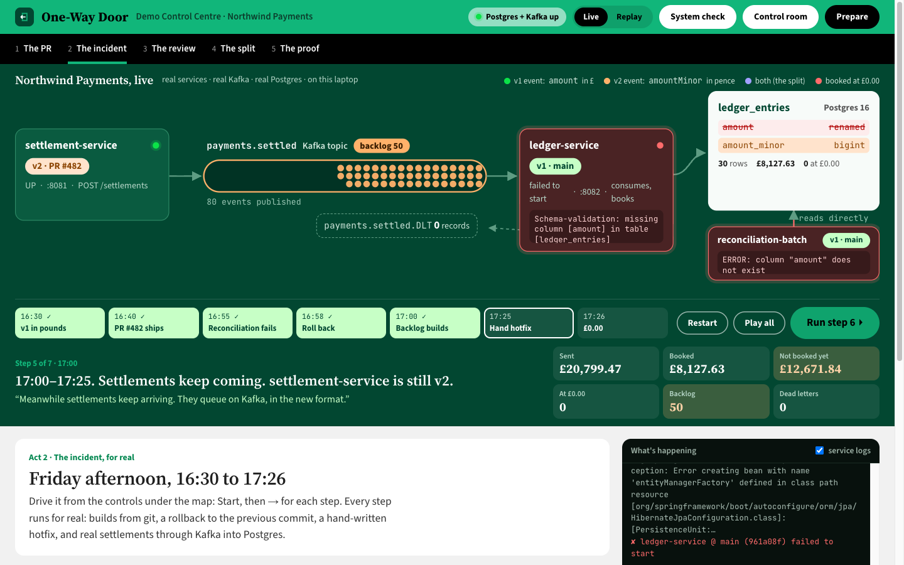
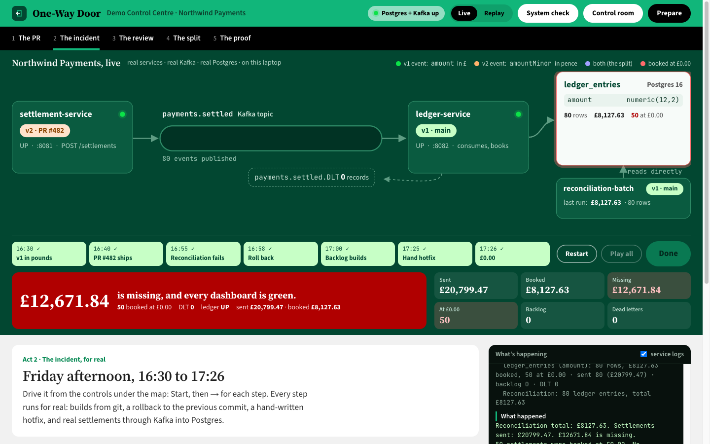
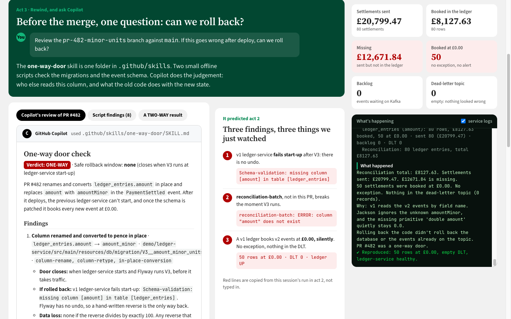
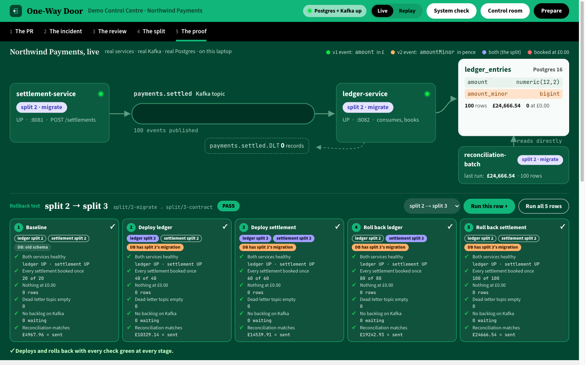
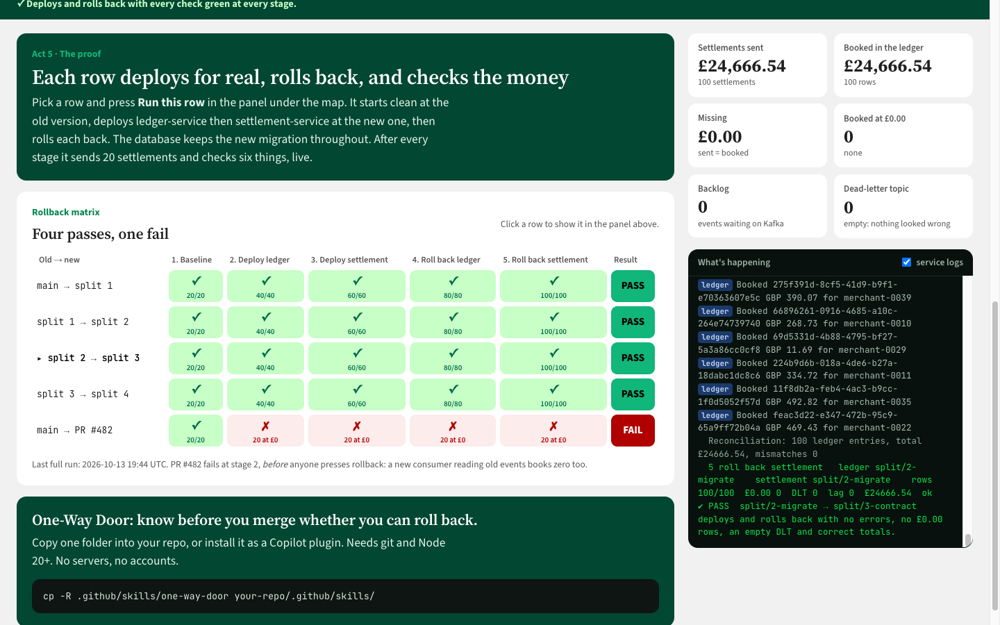

This is the technical design for One-Way Door, a GitHub Copilot agent skill. It covers the problem, the user story, the skill and how it works, where the code lives, how to set it up and run the demo, what changes for the user, how to reuse it, its known limitations and the guardrails it keeps to. Everything described is built and tested.
| 01 | Problem statement | Why rollback fails, and why today's checks miss it | 3 |
| 02 | User story | Who it is for, and the story the demo tells | 4 |
| 2.1 The user story and its criteria | 4 | ||
| 2.2 The demo story: cast and timeline | 5 | ||
| 03 | Skill name and mission | What the skill is, what it does, and how it works | 6 |
| 3.1 Name, mission and capabilities | 6 | ||
| 3.2 Components and design principles | 7 | ||
| 3.3 How it works | 8 | ||
| 04 | Repository link | Where the code lives (TBD), its layout, branches and quality gates | 9 |
| 05 | Setup instructions | The tech stack and installing it in VS Code, CLI, cloud agent and code review | 10 |
| 5.1 Tech stack and install options | 10 | ||
| 5.2 Setup by Copilot surface | 11 | ||
| 06 | Demo instructions | Architecture, running the live demo on a laptop, and its screens | 12 |
| 6.1 Set up and start | 12 | ||
| 6.2 Architecture: the demo system | 13 | ||
| 6.3 Architecture: the demo runtime | 14 | ||
| 6.4 Run the five acts | 15 | ||
| 6.5 Screens: the PR and the rollback | 16 | ||
| 6.6 Screens: £0.00, and the review | 17 | ||
| 6.7 Screens: the proof | 18 | ||
| 07 | Before and after completions | What Copilot says without the skill and with it, and what changes in the system | 19 |
| 08 | Reuse statements | What can be reused as it is, what to configure, and how to extend it | 20 |
| 09 | Known limitations | What it doesn't do yet, the workaround, and what's next | 21 |
| 9.1 Limitations and mitigations | 21 | ||
| 9.2 Future scope: other repositories | 22 | ||
| 10 | Guardrails | What the skill, scripts and hook will and won't do | 23 |
| Version | Date | Change |
|---|---|---|
| 1.0 | 14 Oct 2026 | First issue: skill, hook, plugin, laptop demo, diagrams and screens |
Rollback is every team's first response to a bad release, yet nobody checks that it works. When a release changes stored data or a message format, the old code may not run against what the release leaves behind. Teams find out mid-incident, and nothing before merge checks for it.
Change: a column renamed, dropped or retyped; values converted in place; a required column added.
Old code fails its schema check at start-up, or queries a column that's gone.
Change: a field removed, renamed or retyped; its units or meaning changed.
Old consumers read the missing field as zero or null, or drop the message.
Change: a new serialisation format, new keys, rewritten idempotency records.
Old code can't read the entries: misses, errors or work done twice.
Change: webhooks sent in a new shape, API versions retired, queues or topics deleted.
A redeploy can't take back what partners have already received.
| Safeguard | What it checks | What it never sees |
|---|---|---|
| Unit and integration tests | new code against a fresh database | old code against data the new code wrote |
| CI/CD pipelines | deploying forward | deploying back after the state has changed |
| Migration tools | applying changes in order | undoing them: most only go forward |
| Code review | the lines in the diff | other services and jobs that read the same data |
| Monitoring and alerts | errors and exceptions | wrong values that raise no error |
In scope: changes reviewed before merge in GitHub Copilot, and readers in the same repository. Out: other repositories (section 9), running rollbacks, live data, approving PRs. The demo shows it end to end (section 2.2).
As a developer raising a pull request that changes a database migration or an event contract, I want GitHub Copilot to tell me before I merge whether the change can be rolled back, and if not, how to split it, so that a rollback never makes an incident worse.
As the author, I want a plain verdict and the reason, in my editor, so that I can fix the change before anyone reviews it.
As a reviewer, I want every reader of a changed column or field, including ones outside the PR, so that I review the blast radius, not just the diff.
As on-call, I want a safe rollback window for every release, so that I know whether pressing rollback will help or hurt.
As the owner of a downstream job, I want changes to data I read to be flagged before merge, so that my totals never break or drift silently.
| Stage | Today | With One-Way Door |
|---|---|---|
| Write | Sensible refactor, tests green | Ask Copilot: ONE-WAY, three findings |
| Review | Approved on the diff | Reviewer sees reconciliation-batch |
| Deploy | One step, all at once | Four steps, each reversible |
| Roll back | Old code won't start; hotfix | Previous step runs fine |
| Aftermath | 50 rows at £0.00, no alert | Totals match at every stage |
The demo tells the user story end to end, with real code. Northwind Payments is an invented UK company that settles card payments for small merchants. One pull request, PR #482, gets merged without anyone asking whether it can be rolled back.
| Time | Who | What happens | What everyone sees |
|---|---|---|---|
| 16:30 | Priya | v1 runs: settlements booked in pounds. | 10 rows, all correct |
| 16:40 | Tom | PR #482 ships. Flyway V3 runs in 5 ms; settlement-service now sends amountMinor. | tests were green |
| 16:55 | Grace | reconciliation-batch, not in the PR, still runs SUM(amount). | column "amount" does not exist |
| 16:58 | Sam | Sam rolls back ledger-service only. The old code won’t start on the new table. | missing column [amount] |
| 17:00 | Sam | settlement-service is still v2. Fifty amountMinor events queue on Kafka. | backlog: 50 events |
| 17:25 | Dev | A hand-written hotfix reverses V3. v1 starts and drains the queue. | ledger-service UP |
| 17:26 | Grace | Fifty settlements booked at £0.00. No exception, empty DLT, every dashboard green. | £12,708.11 missing |
Everyone watched the ledger. Nobody thought about settlement-service: it stayed on v2 after the rollback, and the v2 events already on Kafka can't be rolled back. Nor about reconciliation-batch, which reads the table but isn't in the PR.
onewaydoor-proposal-v2.pdf, slides 3 to 14: the cast, why the PR was raised, the incident minute by minute, and why it booked £0.00 rather than failing. Section 6 shows how the demo runs.
For every pull request, answer the question no pipeline asks: if this goes wrong after deploy, can we roll back? Say it plainly, before merge, inside the tools engineers already use, and show the safe way to make the same change.
Every change is two-way (safe to roll back) or one-way (not safe).
For each one-way change: when the door closes, what breaks on rollback, and a safe rollback window.
Finds other code reading the same table, column, topic or field, and marks what isn't in the PR.
Proposes expand → migrate → contract → drop, and generates it as branches when asked.
| Part | Path | Role |
|---|---|---|
| Skill instructions | .github/skills/one-way-door/SKILL.md | The 8-step procedure, gotchas and troubleshooting (167 lines) |
| Pattern catalogue | references/patterns.md | 24 one-way patterns in 4 buckets, each with its safe split |
| Output contract | references/output-format.md | The exact PR comment shape, with worked examples |
| Migration scanner | scripts/scan-migrations.mjs | Destructive DDL in Flyway, Liquibase and EF Core migrations |
| Schema checker | scripts/schema-compat.mjs | Breaking JSON Schema changes, in the old reader's direction |
| Path rule (optional) | .github/instructions/migrations.instructions.md | Rollback rules applied whenever Copilot touches migrations or contracts |
| Hook (optional) | .github/hooks/one-way-door.json | preToolUse: blocks agent edits to migrations already on the default branch |
| Agent environment | .github/workflows/copilot-setup-steps.yml | Node 20 and the default branch, for the cloud agent and code review |
| Plugin | plugins/one-way-door/ | Skill and hook as one install, generated and kept in sync by a test |
Scripts find the mechanical facts. Copilot judges who else reads the data and what old code does with it.
Documented skill, instruction and hook formats. No custom runtime: every surface reads it.
git and Node's standard library. Nothing to install, call or keep running.
Description first; then the 167-line SKILL.md; references only when needed.
ONE-WAY or TWO-WAY, a window and reasons, in a fixed shape. Real errors, no hedging.
Never changes code unasked. Unreachable readers are assumed to exist.
| # | Step | What happens |
|---|---|---|
| 1 | Work out base and head | Default branch from origin/HEAD; always diff from the merge base (base...head, three dots). |
| 2 | Bucket the files | Data, Messages, State or External, by path and content. |
| 3 | Run both scripts | Mechanical findings as JSON. Without Node, step 4 does the work alone. |
| 4 | Read the patterns | Match each change to the catalogue, including buckets the scripts don't cover. |
| 5 | Find the blast radius | Search the whole repo (base and head) for every reader; mark those the PR doesn't change. |
| 6 | Old code against new state | What does the previous release do with the new table, events or cache? Quote the real error. |
| 7 | Write the comment | The verdict line, findings, blast radius and split, in the fixed format. |
| 8 | Generate the split | Only when asked: stacked branches, each commit saying why it rolls back. |
In: --base --head [--repo] [--worktree]. Reads: Flyway SQL, Liquibase (XML, YAML, formatted SQL), EF Core. Finds: column and table renames and drops, retypes, NOT NULL, in-place conversion, backfill, row deletes, edited applied migrations.
In: --base --head [--dir]… [--worktree]. Reads: JSON Schema (*.schema.json). Finds: fields removed, renamed, retyped or made optional, enum values added, new required fields, strict consumers, missing primitive defaults, deleted schemas.
Both: Node 20+ standard library, no network, read-only git; JSON findings[] (file, line, pattern, object, severity, detail); always exit 0.
To be confirmed when the repository is published to GitHub. Once it is, the plugin installs with copilot plugin install OWNER/REPO:plugins/one-way-door.
| Branch | Purpose |
|---|---|
| main | v1: the skill, demo and docs |
| pr-482-minor-units | The one-way PR: V3 renames and converts |
| split/1-expand | V3 adds amount_minor |
| split/2-migrate | V4 backfills and checks |
| split/3-contract | V5: readers switch; trigger |
| split/4-drop | V6 drops amount |
| Check | Covers |
|---|---|
| ci.yml | 62 skill, hook and plugin tests on Linux, Windows and macOS; service unit tests |
| laptop-demo.yml | Headless incident and rollback matrix on Windows and macOS; UI bundle is current |
| Consistency | SKILL.md rules, catalogue coverage, applyTo coverage, plugin in sync |
| Control Centre | 6 JUnit tests for the rules ported from the scripts |
| Component | Version | Needed for | Notes |
|---|---|---|---|
| git | 2.x | Everything | With the base branch's history (not a shallow clone), so the merge base exists. |
| Node.js | 20 or later | The two scripts | Standard library only: no npm install, no network. Optional: without it the skill reviews from the catalogue. |
| bash 3.2+ / PowerShell 7+ | — | The hook (optional) | bash on macOS, Linux and the cloud agent; pwsh on Windows. |
| GitHub Copilot plan | Free or paid | Everything | Free: VS Code agent mode and CLI only. Pro, Pro+, Max, Business, Enterprise: all four surfaces. |
| VS Code | 1.109 or later | VS Code | Agent skills are on by default from 1.109. Workspace Trust required. |
| Copilot CLI | Current | Copilot CLI | npm i -g @github/copilot (Node 22+), WinGet or Homebrew. Windows needs PowerShell 6+. |
| GitHub repo + Actions | — | Cloud agent, code review | Both run on Actions runners; copilot-setup-steps.yml prepares Node and git. |
| Org policies | — | Business, Enterprise | "Copilot Agent Mode in IDE Chat", "Copilot CLI", "Copilot cloud agent" (off by default), "Copilot code review". |
Not needed: a server, database, Docker, npm packages, an MCP server, network access, or any account beyond Copilot. The skill never builds or runs your code.
Then set applyTo to your migration paths and merge to the default branch.
VS Code: set chat.plugins.enabled, then Chat: Install Plugin From Source, or add the folder to chat.pluginLocations. The cloud agent and code review don't load plugins: use option A there.
| What works where | VS Code | Copilot CLI | Cloud agent | Code review |
|---|---|---|---|---|
| Copy into the repo | yes | yes | yes | yes, "when relevant" |
| Plugin | yes | yes | no | no |
| Hook | yes (preview) | yes | yes (bash only) | not documented |
| Symptom | Fix |
|---|---|
| Skill not listed | name: must equal the folder name; open the repo root; trust the workspace; check policies. |
| unknown ref in script output | git fetch origin main:main, or pass --base origin/main; unshallow the clone. |
| Every tool call denied (CLI, Windows) | The hook's shell is missing or policy blocks unsigned scripts: install PowerShell 7, or remove the hook. |
| "Scripts didn't run" in the comment | Install Node 20+. The review is still produced from the catalogue. |
Full guide with sources: docs/setup.md (checked against the live GitHub and VS Code docs on 13 October 2026).
| Service | Role in the story |
|---|---|
| settlement-service (:8081) | The writer: POST /settlements → PaymentSettled event on Kafka |
| ledger-service (:8082) | The reader: consumes events, books ledger_entries; Flyway migrations, Hibernate validation |
| reconciliation-batch | The reader nobody remembered: finance's SUM(amount), straight from Postgres |
| Need | Detail |
|---|---|
| Java (JDK) | 21 or later (tested on 21 and 25) |
| git | 2.x, and the six demo branches locally |
| Internet, once | Maven Central or a company mirror |
| Disk, ports | ~2.5 GB; 7070, 8081, 8082, 9092, 55432 |
| Not needed | Maven, Docker, Postgres, Kafka, npm, admin rights |
Stop with Ctrl+C: services, Kafka and Postgres stop in about 2 s. Full guide: DEMO.md.
Northwind Payments is invented. Three small Spring Boot services, one Kafka topic and one Postgres table: just enough to show a rollback that can't work.

settlement-service takes POST /settlements and publishes PaymentSettled. v1 sends amount in pounds; PR #482 sends amountMinor in pence.
ledger-service consumes each event and books one row in ledger_entries. Flyway owns the schema; Hibernate validates it at start-up, so a wrong schema fails loudly.
reconciliation-batch runs finance's SUM(amount) straight from Postgres. It isn't in PR #482, so it breaks first. This is the blast radius.
| Kept real on purpose | Why it matters to the story |
|---|---|
| Type headers off | The producer sends no Java type; the consumer maps by field name. So v1 and v2 events are both readable by both versions, as in most real estates. |
| Jackson defaults | Unknown fields are ignored. That default is why v1 books a v2 event at £0.00 without an exception or a dead letter. |
| ddl-auto=validate | v1 ledger-service refuses to start against the V3 schema: missing column [amount]. |
| Real rollbacks | A rollback runs the previous commit's code, built from a git worktree, against the current database and topic. |
The org laptop has Java and git, and no Docker. So one Java process, the Control Centre, runs the infrastructure itself and starts the real services as child processes.

| Part | What it is | What it does in the demo |
|---|---|---|
| API and UI server | Spring Boot on :7070; React + Vite UI, built in | REST for each action; live events to the browser over SSE; plays the recorded run in Replay mode |
| Scenario runner | Incident, rollback test, matrix | One action at a time; the same steps and checks as the scripts in demo/scripts |
| Builder | git worktree per ref, the service's own mvnw | Builds any branch; caches jars by git tree hash, so a rebuild is instant |
| Runner | java -jar child processes | Health checks, start-up failure root cause, graceful stop so a rollback frees the Kafka group at once |
| PostgreSQL 16 | Embedded binaries, :55432 | Database ledger; stopped cleanly on exit |
| Apache Kafka | KRaft broker in the JVM, :9092 | Topics payments.settled and .DLT; an observer reads each event's real shape for the map |
| Act | Time | Click and show | Say |
|---|---|---|---|
| 1 · The PR | 0:35 | Tab 1: the V3 migration and event change; Run tests (green). Send the Copilot prompt in VS Code now. | "PR #482 moves to pence. Tests are green. You'd approve this." |
| 2 · The incident | 1:10 | Tab 2: Start, then → for 7 steps. The controls and live numbers sit under the map. | One line per step, ending: "Every dashboard is green, and fifty settlements are booked at £0.00." |
| 3 · The review | 1:00 | VS Code: Copilot's answer. Tab 3: each finding beside the real error from act 2. | "One folder in .github/skills. Scripts check, Copilot judges." |
| 4 · The split | 0:35 | Tab 4: expand, migrate, contract, drop. | "Same destination, four steps, each reversible." |
| 5 · The proof | 0:40 | Tab 5: matrix 4 PASS, 1 FAIL. Optionally Run this row live. | "PR #482 fails before anyone presses rollback." |
| Time | Step | What happens |
|---|---|---|
| 16:30 | v1 in pounds | 10 settlements published with amount; ledger books them in numeric(12,2). |
| 16:40 | PR #482 ships | ledger v2 starts; Flyway runs V3 (rename, ×100) in 5 ms; settlement v2 sends amountMinor. |
| 16:55 | Reconciliation fails | ERROR: column "amount" does not exist, in a job nobody changed. |
| 16:58 | Roll back | v1 ledger stops: Schema-validation: missing column [amount]. Flyway has no undo. |
| 17:00 | Backlog builds | 50 v2 events queue on Kafka; nobody is consuming. |
| 17:25 | Hand hotfix | DBA reverses V3; v1 starts and drains the queue. |
| 17:26 | £0.00 | Jackson ignores amountMinor; missing double amount = 0.0. 50 rows at £0.00, DLT empty. |
Exit 0 = reproduced; 4 PASS + 1 FAIL.
Screens from a live run on 14 October 2026: real services, real Kafka, real Postgres, on one laptop. Amounts are random each run; the outcome is the same every time.






Same prompt, same pull request: "Review the pr-482-minor-units branch against main. If this goes wrong after deploy, can we roll back?"
Verdict: ONE-WAY · Safe rollback window: none (closes when V3 runs at ledger-service start-up)
reconciliation-batch (not in this PR): SUM(amount) breaks when V3 runs.
Expand → migrate → contract → drop, each step justified. Reply "generate the split".
| Moment | PR #482 merged as written | The split, as the skill proposes |
|---|---|---|
| Deploy the new reader | 20 old events booked at £0.00 | Reads either field; all booked correctly |
| Finance reconciliation | Fails: column "amount" does not exist | Totals match at every stage |
| Roll back the reader | Old code won't start; hand hotfix | Previous step runs on the new table |
| Money | £12,708.11 missing, no alert (recorded run) | £0 missing; DLT empty; no backlog |
| Rollback matrix | FAIL at stage 2 | PASS: 4 of 4 steps, 5 stages each |
One-Way Door is generic. Nothing in SKILL.md or its scripts refers to the demo; a test enforces that. Any team can reuse it in any GitHub repository by copying one folder or installing one plugin, with no servers, dependencies or changes to their build.
| Asset | Reuse | How |
|---|---|---|
| The skill | As it is | Copy .github/skills/one-way-door/, or install the plugin. |
| Path rule | Configure | Copy, then set applyTo to your migration and contract folders. |
| Hook | As it is | Copy .github/hooks/. Base branch: origin/HEAD, or set ONE_WAY_DOOR_BASE. |
| Agent environment | Merge | Add its two steps (Node 20, fetch default branch) to your copilot-setup-steps.yml. |
| Schema folders | Configure | --dir per folder; the skill finds them with git ls-files '*.schema.json'. |
| Pattern catalogue | Extend | Add a pattern with its safe split; a test checks every script pattern is documented. |
| Scripts | Extend | New formats (Avro, Protobuf) as new scripts: same contract, JSON out, exit 0. |
| Control Centre | Pattern | Demo-specific, but its rollback matrix shows how to prove any split. |
Plugin manifest 1.0.0. The plugin is generated from .github and a test fails if they drift. Reinstall plugins after updates.
Readers across repositories (find-readers), rule-data checks, Spanner and BigQuery schemas.
| # | Limitation | Impact | Mitigation |
|---|---|---|---|
| 1 | Scripts cover SQL (Postgres, MySQL, SQL Server dialects), Liquibase, EF Core and JSON Schema only | Avro, Protobuf, caches and external contracts get no mechanical check | The catalogue and Copilot's judgement cover them; add scripts with the same contract |
| 2 | One repository at a time | Readers in other repos are missed | Future scope: search related repos, and assume unreachable ones read the data (section 9.2) |
| 3 | Judgement comes from a language model | Answers can vary; it may miss a reader or over-flag | Scripts anchor the facts; fixed format; humans still review |
| 4 | Reads code and diffs, not runtime state | Doesn't know deploy order, flags or data volumes unless told | Say them in the prompt; the window uses "until <event>" when order holds the door open |
| 5 | Copilot code review uses skills "when relevant" | May not pick the skill; running scripts or hooks there is undocumented | Ask @copilot (cloud agent) for the full review |
| 6 | The split is proposed, not proven, by the skill | Generated branches need review and testing | The demo's rollback matrix shows how to prove each step |
| 7 | Needs the base branch's history | Shallow clones have no merge base | git fetch --unshallow; the setup steps fetch it for the cloud agent |
| 8 | Hooks: VS Code is preview; Windows PowerShell hook not yet run on real Windows | The guard may not fire on some setups | CI now runs the hook tests on Windows; the skill doesn't depend on the hook |
| 9 | Plugin hook relies on ${PLUGIN_ROOT} | If Copilot CLI doesn't expand it, the plugin's hook allows everything | Use the in-repo hook (install option A) |
| 10 | Windows: a crashing hook blocks every tool in Copilot CLI | No PowerShell 7, or signed-scripts-only policy, stops Copilot working | Check Get-ExecutionPolicy -List; leave the hook out if needed |
| 11 | Depends on Copilot plans and org policies | Free has no cloud agent; the cloud agent is off by default in orgs | See section 5; ask the org admin |
| 12 | The demo Control Centre is for demonstrations | Embedded Postgres; fixed service ports; locked-down laptops may block the binaries | Replay mode needs nothing else; Docker scripts as an alternative |
Today the skill finds readers with git grep in one repository. Real data is often read elsewhere: a finance job, a report, a partner adapter. Limitation 2 is the biggest gap, and this is the plan to close it.
| # | Change | What it does |
|---|---|---|
| 1 | Related-repos config | .github/one-way-door.json lists each related repo: GitHub name, local path if cloned, and the deployed ref, because the readers that matter are the ones running today. JSON, so the scripts stay standard-library Node. |
| 2 | find-readers.mjs | Takes the tables, columns, topics and fields the other scripts extract, with snake_case and camelCase variants, and searches each cloned repo at its deployed ref. Offline, deterministic, JSON out: per repo, searched or unreachable, the ref, and every hit. |
| 3 | Copilot searches the rest | SKILL.md tells Copilot to use its own GitHub code search for repos that aren't cloned, where it has access. The scripts never call the network. |
| 4 | Unreachable means a reader | If a related repo can't be searched, a change to shared data can't be TWO-WAY. The blast radius lists the repo as “unknown, assumed to read”, and the split keeps the old field until someone confirms. |
| 5 | Coverage in the verdict | One line in output-format.md, for example: Searched 2 of 3 related repos at their deployed refs; partner-adapter unreachable, assumed to read. |
| 6 | Cross-repo split | Each step names its repo, its owner (from CODEOWNERS) and its ordering rule: a reader's switch must be live before the drop ships. A new “split ownership” pattern in patterns.md. |
| 7 | Tests and docs | Fixture tests with temporary repos: a reader in another repo, an unreachable repo, name variants, a deployed ref behind main. Then setup.md, the README and this page. |
Not knowing is treated as risk, never as all clear. It's the same principle as the hook. A skill that said TWO-WAY because it couldn't open finance's repository would be worse than no skill at all.
Move reconciliation-batch into its own repository, northwind-finance. The verdict then reports “checked 2 of 2 related repos, SUM(amount) found in northwind-finance”. With that repo missing, it shows the cautious verdict. An earlier, larger multi-repo demo plan is in docs/multi-repo-plan.md.
Workspace Trust, org and device policies, terminal approvals and the cloud agent's firewall all apply. The skill adds no way around them.
No secrets or credentials needed. The scripts send nothing anywhere. Code is processed only by Copilot, under the user's existing licence.
Every rollback rebuilds the old code from git. Replay is labelled as a recording. All companies, people and amounts are invented.
Reviewed by: ____________________ Approved by: ____________________ Date: __________
Looks good overall. Storing money as integer pence avoids floating-point rounding, which is a good improvement.